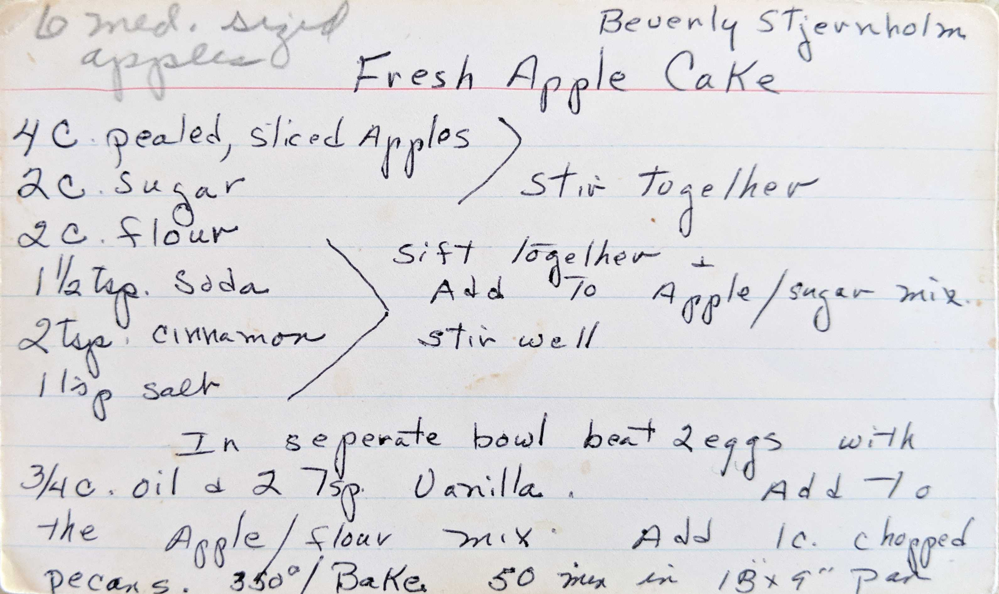
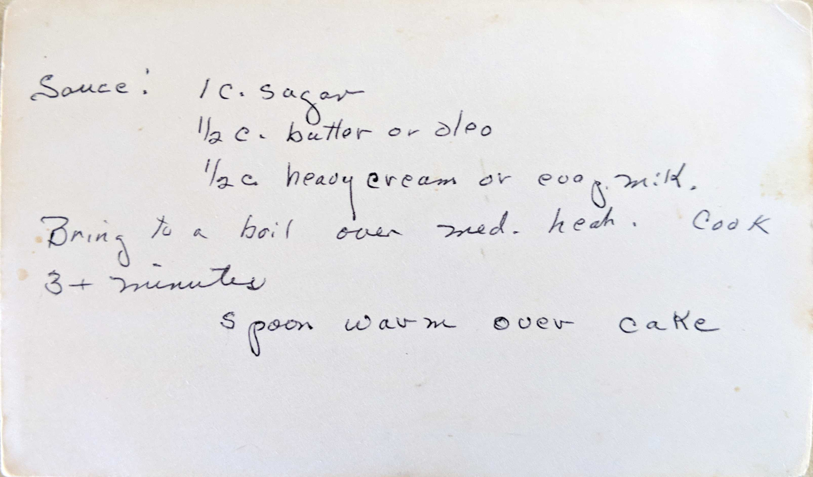

Fresh Apple Cake
Beverly Stjernholm
6 med. sized apples
4 C. pealed, sliced Apples
2 C. sugar
>Stir together
2 C. flour
1 1/2 tsp. soda
2 tsp. cinnamon
1 tsp. salt
>Sift together + Add to Apple/sugar mix. Stir well
In seperate bowl beat 2 eggs with 3/4 C. oil + 2 tsp. vanilla.
Add to the Apple/flour mix. Add 1 C. chopped pecans. 350°/Bake. 50 min in 13"x9" pan

Sauce: 1 C. sugar
1/2 C. butter or oleo
1/2 C. heavy cream or evap. milk.
Bring to a boil over med. heat. Cook 3+ minutes.
Spoon warm over cake